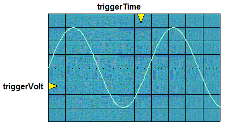
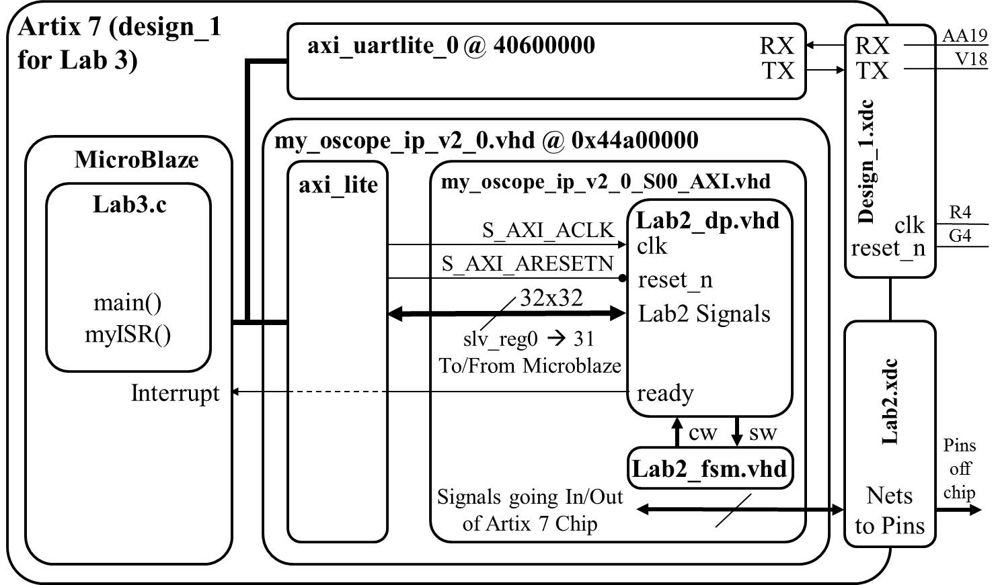

| Start date: | March 8 |
| End date: | March 15 |
| Lab: | 3 |
| Status | Complete
|
Lab 3 - Software control of a datapath
Lab Overview
In this lab, we will integrate the video display controller developed
in Lab 2 with the MicroBlaze processor built using the fabric of the Artix-7 FPGA.
In the preceding lectures, we learned about the Vivado and
SDK tool chains, now it's time to put that knowledge to the test by building
a software controlled datapath. Lab 2 revealed some shortcomings of our
oscilloscope that this lab intends on correcting. Specifically, we will add:
- Using both trigger volt and trigger time for the trigger
- Using polling and/or interrupts
- The ability to enable and disable which channels are being displayed
The ability to trigger off of channel 2
The ability to change the slope direction of the trigger
The following figure shows required functionality - your program should allow
the user to change the position of the triggerVolt and triggerTime indicators
with the result that the waveform should be drawn so that the periodic waveform
is increasing through that voltage at that time.

In order to accomplish this, you will need to make some minor changes to the
lab2 component, create a new piece of IP, and then program that IP using the MicroBlaze, as described in the block diagram below.
We will walk through these steps below.

Note:
Remember the Ready signal in the diagram above is coming from the Flag Register (FlagQ). It is assumed
that you hooked the Ready signal coming from the Audio Codec into the "Set Flag" input to the Flag Register
and the output of the Flag register FlagQ is the new "Ready" signal coming out of the lab2_dp, and
eventually connecting toe Microblaze's interrupt pin. If you accidentally skip the Flag Register and
hook the audio codec's Ready signal directly to the interrupt pin, you will find your system plots the
sinusoid's incorrectly, plotting what looks to be a very high frequency sinusoid instead of the correct frequency.
Note: If your Flag Register is 8-bits wide, you will need to extract the
single bit of Q (the std_logic_vector output from the flag register) as the
interrupt signal (the one set by the Ready signal). This may require you to extract the one bit Q as a separate
signal to connect to the MicroBlaze in your block design.
Hardware
New for 2021: Quick instructions for creating your Microblaze project can be found in
Lab3_Install_short_version.pdf
which is a combination of “MicroBlaze_Install_Short_Version” and “Lec19_Install_Short_Version”, tailored for lab3
For the most part, your hardware you developed in lab2 will be unchanged.
For controlling your TriggerVolt and TriggerTime, you can either
(1) Retain your Lab2 buttons to control Trigger Volt and Trigger Time, but you must input these
signals into Microblaze, and be able to display the values on the UART monitor
or
(2) Control TriggerVolt and TriggerTime from your Microblaze UART keyboard interface (via teraterm)
Inside the lab2_dp component, remove the logic driving
the triggerVolt and triggerTime signals into the video component.
Remove the buttons signal from the lab2 and lab2_dp entities.
Remove the buttons signal from the ucf file.
Add the triggerVolt and triggerTime signals to the
lab2 and lab2_dp entity descriptions.
Drive the triggerTime and triggerVolt inputs on the video
component with the corresponding signals on the lab2_dp entity.
Setup MicroBlaze slv_regs for microblaze to be able to write to TrigVolt and TrigTime into lab2 datapath ports
Note:
Depending on your design, you will want to control some signals (like TrigVolt, TrigTime, Ch1_enb, Ch2_enb)
from the UART keyboard Terminal
while your program is running in continuous mode.
(You will not want to halt the program in order to change these settings, but rather change them "live").
Therefore, in your C code "while loop", you may want to check if the user has hit the
key on the keyboard without having to actually read the key. For
these cases, the following command will prove useful. Note that
"uartRegAddr" is a constant, the address of the uart.
XUartLite_IsReceiveEmpty(uartRegAddr);
Hardware Setup
Your first step will be to create a component for your lab2 component in
your Vivado repository. This will require you to think about what signals
are routed to the MicroBlaze and what signals are going outside the Artix 7 chip.
The following table should help.
| Signals To/From MicroBlaze | Signals Going Outside Artix 7
|
| exWrAddr | clk
|
| exWen | reset
|
| exSel | ac_mclk
|
| L_bus_out, R_bus_out | ac_adc_sdata
|
| exLbus, exRbus | ac_dac_sdata
|
| flagQ | ac_bclk
|
| flagClear | ac_lrclk
|
| triggerTime | sda
|
| triggerVolt | scl
|
| ready | tmds
|
| ch1_enb, ch2_enb? | tmdsb
|
For the mapping of the MicroBlaze slv_reg to/from lab2 ports, you need to specify not only which 32-bit slv_reg for each signal,
but also which bits are used, and whether it is read/write (in or out to microblaze)
Implementation and Testing
Lessons from previous years:
- For all the lab2 signals you are reading into Microblaze AXI registers, add them to your C-code menu, using printf to
print their values when you type the "?" command. This is very useful in debugging
Build your C-code incrementally, with baby-step tests such as these [and add each of these tests as one of your C-code menu options]:
- Draw a horizontal line on channel 1 and a diagonal line on channel 2, by writing the proper values to the BRAM
[this test does not require your interface with the audio codec or the interrupt to work, and tests if you can write to the BRAM,
and see the correct output on the scopeface]
pseudo code:
case 'd': // some of these will be XIL commands
for (i=0;i<1024;i++) {
exWrAddr = i; // set BRAM address
exLBus = 185; // row for horz line
// need to shift to upper 10bits?
exRBus = i; // diagnonal line [need to shift?]
exWen = 1; // write data to address in BRAM
exWen = 0; // turn off write
}
break;
- Use polling (polling the ready flag) to grab each sample and write them into your C-array. [this is a good test to see if
you are getting the ready flag, able to read live samples, able to clear the flag, and repeat to fill your array]
pseudo code:
case 'm': // some of these will be XIL commands
for (i=0;i<1024;i++) {
while(flagQ==0){}; //wait on ready
array_L[i] = LbusReg; // read audio values
array_R[i] = RbusReg;
ClearFlag = 1; //clear the flag
ClearFlag = 0; //release the clear, so can be set again
}
break;
- Use printf to print all the values in your array to the UART terminal [this is a good test to see if you are
successfully reading audio codec samples in and storing them in your c arrary, or not]
case 'p': // some of these will be XIL commands
for (i=0; i<1024; i++){
printf("%x\r\n",Xil_In16(array_L[i]));
}
break;
- Write your C-array to BRAM (not triggered) [this is a good test to use, after you fill the array in the test above,
to see if you can write it to the BRAM and see it appear on scopeface... and fix any calibration issues]
- Use interrupts (ISR) to fill the C-array with samples [then use command above to write the array to BRAM]
- Write a command to search through the C-array to find the trigger point, and printf this location to the terminal
- Given this trigger location in the array, write the appropriate data values in the array to the BRAM, so the sine wave appears triggerd.
- Now you have all the pieces to create the "continuous" mode with interrupts and triggering
Note:
When you are finding your trigger point in lab3, just like in lab2,
you need to compare apples to apples.
If your number in your C-array is 16-bits, it will be a large number in decimal like 26572,
and this large 16-bit value you will want to write to your BRAM (as your VHDL code will
later pull out the upper 10 or 9 bits)
Meanwhile your triggerVolt is a small 10-bit number, like decimal 220.
So to compare apples to apples in your C-code, (just for the purpose of finding the trigger)
you might what to change the value in your C-array to the scale of the
trigger volt by grabbing only its upper 10-bits (or in math, shift right 6 times,
or divide by 2^6). Remember, in lab2 you probably also added (or subtracted?) an
offset like the number like 34 (for the DC offset), so you would also need to add or subtract this
from either trigvolt or the scale array number when you are doing the search for
the trigger value.
Note:
In the past, some students in their datapath hooked up L_Bus_out/R_Bus_Out directly to the 18-bit "signed" value
coming out of the audio codec, not the 18-bit value converted to "unsigned".
If you do this, your sine wave will look strange (or maybe off the screen)...
this can also impact your triggering. At some point, you need to convert from signed to unsigned.
If you didn't do this in your VHDL datapath, you could always do this in your C-code.
If you are doing this conversion in C, remember you cannot just cast a variable from signed to unsigned.
casting to unsigned in C would not do what you want (as we explained back in lab2).
For example, if you have a signed value X = -7, and you cast X to an unsigned variable, what would -7 become?
Unsigned values must be Zero or greater. -7 is undefined.
If you go back to slide 11 in the lab2.pdf, you can see the pattern of this conversion with the 5 example numbers.
It looks like all the lower bits stay the same, and only the MSB changes... it flips its value.
I know two simple ways to flip the MSB (there are some other ways also), either
(1) inverting the bit with a bitwise operator like XOR, or
(2) adding a special number that keeps all the lower bits the same but only changes the MSB
For method (2), adding the special number, look at the slide 11, you should be able to figure it out.
For method (1), using XOR, ask yourself
(a) what happens to a bit if I XOR it with ZERO?, and
(b) what happens to a bit if I XOR it with ONE?
Note:
The XIL in and out functions are either 8-bit, 16-bit, or 32-bit [like Xil_Out16(exWraddr, i],
while you have some lab2 values that are different sizes (like trigvolt is 10-bits), so you may need to append bits in your VHDL code to make them match
Gate Check 1
You need to decide if TrigVolt, TrigTime, Ch1_enb, and Ch2_enb will be controlled via buttons on the FGPA board or
using the UART keyboard (teraterm) controlling them through Microblaze.
For this Gate Check you will turn in a revised Lab2_datapath block diagram, correctly showing all these signals
(and their directions), and adding or removing parts (like button debouncing).
Also for this Gate Check, you will turn in a mapping of 32 AXI registers (slv_reg) to lab2 signals.
or the mapping of the MicroBlaze slv_reg to/from lab2 ports, you need to specify not only which 32-bit slv_reg for each signal,
but also which bits are used, and whether it is read/write (in or out to microblaze).
Gate Check 2
You need to have all of your Lab 2 functionality implemented with the Microblaze.
That is, you need to be able to set ExSel to '0' from your microblaze C program and be able to achieve the same
functionality as you did in Lab 2.
Gate Check 3
For the first task for GC3, you need to be able to send UART commands using Tera Term (or another terminal emulator)
to your FPGA to adjust the trigger on the screen. The trigger on the
screen should properly react to moving the trigger either up or down.
Or, if you choose to not to control the trigger from the terminal and kept the lab 2 Trigger Volt and Time buttons,
then show on your UART display that your C program can read the Trigger Volt and Trigger Time from the hardware buttons.
For the second task for GC3, you need to implement at least one of the baby-step tests mentioned above in the "Implementation and Testing" section.
Required Functionality
In order to achieve required functionality, you will need to properly trigger
the oscilloscope on channel 1 using a positive edge trigger. Control of
this process is to be performed using the MicroBlaze. The main tasks of
the MicroBlaze will include:
- Move audio samples into a pair of circular buffers. These circular
buffers will be maintained in the address space of the MicroBlaze. That
is, you should have two big arrays defined in your program.
Use polling of the ready bit of the flag register. [2021 change: you have the option of using a circular or linear buffer]
- Examine the samples, looking for a trigger event.
- Fill the remaining sample slots in memory.
- Move the appropriate buffer values into the display memory of
the oscilloscope (lab2) component.
- Provide a user menu (through the terminal) allowing the user
to adjust the trigger voltage and trigger time. (Or if you did not
implement the ECO, show your microblaze can read trigger volt and time
by displaying on the UART monitor)
B-level Functionality
A-level Functionality
- Achieve required functionality.
- Use the ready bit of the flag register to trigger an interrupt.
The ISR should store the samples (left and right), look for a triggering
event, and signal when the stored samples should be transfered to the
BRAM in the oscilloscope component.
- Add means to control Ch1_enb and Ch2_enb either by adding two FPGA board switches or
controlled by microblaze terminal interface.
A-level Functionality
Achieve B-level functionality.
Ability to enable and disable channels to display
Ability to trigger off channel 2
Ability to change the slope direction of the trigger.
README
For this lab, README only needs
- Design: Updated lab2 block diagram with correct signals
- Design: Mapping of 32 AXI registers to lab2 signals
- Issues and lessons learned
- Evidence of completing Gate Checks 1 and 2, functionality, and A-functionality, along with the date/time achieved.
This section should clearly state for each milestone/functionality the date/time it was achieved, level of achievement
(e.g, achieved, partially-achieved, not achieved), what was achieved, and how you proved it
(via demo or evidence like images/videos).
For example, you could have a table like this:
| Milestone |
Date/Time |
What was achieved |
| Gate Check 1 |
|
|
| Gate Check 2 |
|
|
| Gate Check 3 |
|
|
| Required Functionality |
|
|
| A Functionality |
|
|
Grading
| Item |
Grade |
Points |
Out of |
Date |
Due |
| Gate Check 1 |
On-Time ------------------------------------------------------------------ Late: 1Day ---- 2Days ---- 3Days ---- 4+Days |
|
10 |
|
BOC 22 |
| Gate Check 2 |
On-Time ------------------------------------------------------------------ Late: 1Day ---- 2Days ---- 3Days ---- 4+Days |
|
10 |
|
BOC 23 |
| Gate Check 3 |
On-Time ------------------------------------------------------------------ Late: 1Day ---- 2Days ---- 3Days ---- 4+Days |
|
10 |
|
COB 24 |
| Required Functionality |
On-Time ------------------------------------------------------------------ Late: 1Day ---- 2Days ---- 3Days ---- 4+Days |
|
40 |
|
COB L25 |
| A Functionality |
On-Time ------------------------------------------------------------------ Late: 1Day ---- 2Days ---- 3Days ---- 4+Days |
|
10 |
|
COB L25 |
| Use of Git / Bitbucket |
On-Time: 0 ---- Check Minus ---- Check ---- Check Plus ---- Late: 1Day ---- 2Days ---- 3Days ---- 4+Days |
|
5 |
|
COB L26 |
| Code Style |
On-Time: 0 ---- Check Minus ---- Check ---- Check Plus ---- Late: 1Day ---- 2Days ---- 3Days ---- 4+Days |
|
5 |
|
COB L26 |
| README |
On-Time: 0 ---- Check Minus ---- Check ---- Check Plus ---- Late: 1Day ---- 2Days ---- 3Days ---- 4+Days |
|
10 |
|
COB L26 |
| Total |
|
|
100 |
|
|